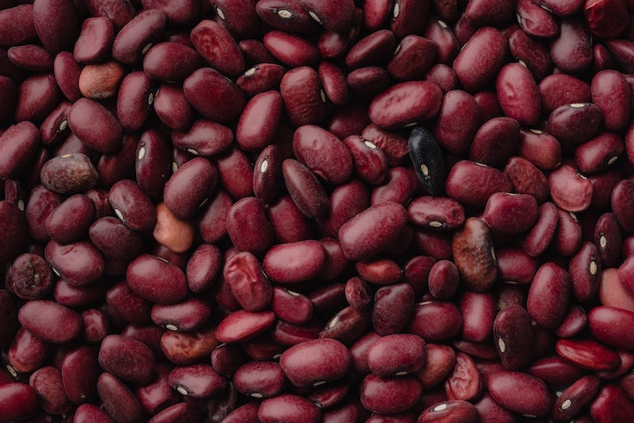

Beans
Foolproof method for preparing dry beans.
Ingredients
- High quality dry beans. Rancho Gordo brand or similar
- Aromatics! Onion, garlic, celery, carrot, peppers, whatever you want
- Oil or butter to fry your aromatics
- Salt
- Whatever flavorings you want. Spices, bullion, dried mushroom powder, the sky's the limit
Instructions
- Optionally soak the beans in salted water for up to six hours before cooking.
- In a pot large enough to hold the beans, fry your aromatics in your choice of oil.
- When the aromatics are softened, add the beans and enough water to cover them by a couple of inches.
- Bring the beans to a rolling boil and boil them hard for 10 minutes.
- Reduce the beans to as low a simmer as possible and cook until tender, several hours.
Add your flavorings whenever seems appropriate. Things like boullion and bay leaves when you start to boil the beans, things like fresh herbs at the end.
Keep at least an inch of water above the beans at all times lest they scorch. If you need to add more water, boil water in a separate vessel and add that.
Recipe from Rancho Gordo
